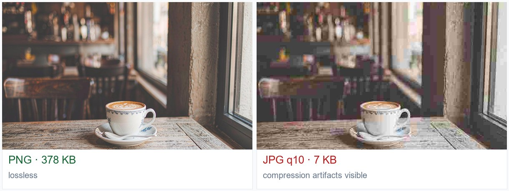
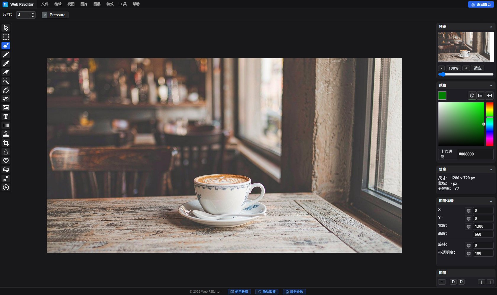

PNG 与 JPG 怎么选？透明、体积与导出
「存 PNG 还是 JPG？」选错了，文件不是大到发不出去，就是糊得不能用，或者你需要的透明区域变成了一块白。整个判断其实三句话就能说完，剩下的都是细节。
三句话的决策
- 需要透明（抠图、签名、贴纸）→ 只能 PNG。JPG 存不了透明。
- 需要文字清晰、之后还要再改（截图、设计稿、图表）→ PNG，无损，可反复编辑。
- 只是分享照片（人、风景、商品）→ JPG 质量 85，体积极小，肉眼几乎无差。

两种格式各自丢掉了什么
PNG 是无损的。每个像素原样存下来，再用一套预测滤波加 DEFLATE 压缩——思路和压缩一个文本文件一样。打开、保存一百次，第一百个文件与第一个完全一致。这就是它适合做工作格式的原因：截图、Logo、抠图、还要再编辑的图层导出。
JPG 是有损的，而且丢得很规律。图像被切成 8×8 的块，每块转成频率信息，高频——细节、硬边、细腻渐变——按质量值被量化掉。平滑区域压得极好，两色之间的突变压得很差，这就是为什么文字在 JPG 里会出彩边，红 Logo 压在白底上边界会发糊。
由此得到一个反直觉的结论：JPG 的质量不是线性旋钮。100 到 90 之间体积掉得飞快而画面几乎没变；90 到 80 继续掉、照片仍然好看；70 以下曲线就平了——省下的只有几个百分点，换来的是天空里的方块、灯光周围的条纹、高对比边缘的蚊噪。为了卡体积把质量调到 40 的人，是在用可见的损伤，换一个本来靠裁掉 10% 画幅就能拿到的节省。
透明，以及它会在哪里断掉
JPG 没有透明通道。把抠好的透明底导出成 JPG，编辑器就必须给那些像素填点东西——通常是白，有时是黑，取决于编码器。格式本身没法表示「这里什么都没有」，所以填白是预期行为，不是 Bug。
PNG 可以，但透明仍会在三个常见的地方断掉：压平——导出前把透明层并到不透明底上，透明在写文件之前就没了；索引色——降到调色板会把柔和的抗锯齿边缘变成硬边，因为中间那几级灰不存在了；接收方——某些聊天工具和打印服务会自动给 PNG 垫一层白底，于是透明 Logo 在编辑器里正常，落到文档里带了个框。
一个习惯能同时避开这三种：导出 PNG 之后，用能显示棋盘格的查看器把导出的文件打开确认一次。十秒钟，好过客户上传之后才发现。
什么时候 PNG 反而更小
「JPG 总是更小」这句对照片成立，对图形不成立。一份文字文档的截图、一个扁平图标、六种颜色的图表、纯色底上的 Logo——这些有大片完全相同的像素。PNG 的滤波加 DEFLATE 能把一串同色像素压到几乎不占数据，JPG 却还要为每个块的边界花字节，并在每个字母周围留下可见的伪影。
所以体积跟着内容走，不跟着扩展名走。一张 1200×630 的纯色加文字横幅，PNG 可能 40KB，JPG 质量 90 是 90KB，而且更难看；同样的尺寸换成一张照片，立刻反转：JPG 60KB，PNG 900KB。先看图里是什么，再决定格式。
在编辑器里怎么导
编辑完成后点 【文件】→【导出】，填文件名，选 PNG 还是 JPG。（顺便说清：【文件】→【另存为】 保存的是可再编辑的工程文件，不能当图片用。）

质量滑杆默认 90，只在有损格式下出现。留在 85 到 90：观感接近无损，体积小很多。70 以下开始出块；95 以上体积膨胀但看不出收益，因为你上传之后平台还要再编码一次。
勾上 显示文件大小，估算体积会随滑杆实时变化。这是找「刚好卡在上限内的最高质量」最快的办法：往下拖，数字进线就停。同一个面板还会报像素尺寸，导出前扫一眼有好处。
画面里有透明区域时，只有 PNG 留得住。别合并图层，也别在最后一刻垫一层不透明底——那会静悄悄抹掉你花时间抠出来的 alpha 通道。
上传之后还有一道压缩
你导出的是质量 85，平台展示的是它自己再压一遍的结果。这就是为什么在导出对话框里把质量拉到 100 意义不大：多出来的字节在平台那一端会被重新丢掉，而你付出了更长的上传时间。
真正能保住清晰度的做法是一次到位：按最终展示尺寸导出，质量停在 85 到 90，不要反复从平台下载预览再重存。如果一张图要在多个尺寸上使用，从原始工程分别导出，而不是把小尺寸那张放大——放大是凭空插值，比重新导出差得多。
常见问题 FAQ
照片导出 JPG 该用什么质量？
85 到 90。质量 85 时正常观看尺寸下与原图看不出差别，体积大约是 PNG 的十分之一。调到 95 或 100 只是多花字节，平台重新压缩时照样丢掉。低于 70，平滑的天空和皮肤上开始出现方块。
要保证小字清晰，用哪个格式？
PNG。JPG 把图像切成 8×8 的块逐块近似，细笔画会带上振铃和彩边，质量再高也有。截图、图表、幻灯片、任何带文字的图都该用 PNG，否则字在打印或阅读之前就已经脏了。
PNG 最小能压到多小？
先减颜色数，再减尺寸。纯色的扁平图形只有十几种颜色，全尺寸也可能只有几 KB，因为 PNG 对重复像素的压缩效率极高。照片没法这么压：它包含成千上万种颜色，硬减调色板只会在渐变里做大色带，体积却没小多少。
相关教程推荐
同一张图分别导 PNG 和 JPG，对比体积，再把小字放大到 200% 看边缘。